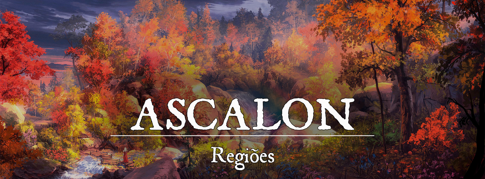

Ascalon
Descrição
Ascalon, a terra sagrada do sol e da lua, lar de incontáveis sacerdotes e cavaleiros a serviço de Hoffe e Chantrea, é uma das nações mais poderosas de Pheros. Em seus primórdios, Ascalon foi um refúgio frio e calmo, mas acolhedor, e que eventualmente desabrochou como um lar de muitos. Apesar de ser uma terra de invernos rigorosos, a primavera sempre surge como um facho de esperança para as pessoas.
Proclamada uma terra sagrada, os sacerdotes de Ascalon, principalmente os dedicados a Hoffe, exercem grande influência sobre a sociedade. A Igreja do Sol é presente na vida de muitos, acolhendo desabrigados, inspirando e abençoando o povo comum, e principalmente servindo como um escudo que protege contra a escuridão. Apesar disso, a Igreja é rigorosa e demanda compromisso de seus acólitos. Os mais dedicados em seus deveres passam a servir a Igreja ao realizar seus votos sagrados.
A Igreja da Lua, por outro lado, não é tão presente na sociedade quanto a Igreja do Sol. Em seu papel, a Igreja da Lua ensina sobre a história e a cultura de Ascalon e Pheros, bem como apresenta um mundo de mistérios e segredos aos seus discípulos. Os templos da Lua (que normalmente são observatórios) muitas vezes podem ser encontrados em lugares afastados de grandes fontes de luz para permitir uma melhor visão dos céus e seus estudos.
Geografia:
O território de Ascalon, por muitas vezes, é incerto, visto que frequentemente avançam e recuam suas fronteiras por conta de guerras e acordos. É uma terra de muitas planícies, com o leste mais florestado do que o oeste. Ascalon tem acesso a costa leste e norte do continente, além de estar em posse de um enorme lago a oeste do reino. O inverno costuma ser rigoroso, no entanto Ascalon sempre é agraciado com uma primavera muito vívida e agradável.
Sociedade
População:
Os humanos representam a maior parte da população de Ascalon. Ainda assim, devido ao tamanho da cidade, muitas outras raças ainda são encontradas na capital. Os tieflings muitas vezes são vistos como agouros em Ascalon e crianças nascidas tieflings normalmente são abandonadas. É muito fácil encontrar pelo menos uma criança tiefling na maioria dos orfanatos de Capital Dourada.
Cultura:
A cultura ascalonita gira em torno da representação de heróis e campeões através da arte. Peças de teatro, quadros pintados por artistas renomados, canções e danças são a maneira preferida dos ascalonitas de demonstrar seu afeto e admiração por contos antigos ou por heróis que arriscam a vida em aventuras épicas.
Caráter:
O povo de Ascalon é bastante ligado à fé. Acreditam bastante na honra e no dever, fazendo com que os cavaleiros sejam figuras bastante respeitadas. E além disso, a arte é uma característica muito importante no reino e é adorada por grande parte da população. Seja através de músicas, teatros ou poemas, os ascalonitas adoram a arte.
Datas e Festividades:
Desabrochar da Primavera: A primavera é muito importante em Ascalon e representa uma nova etapa da vida. Após um rigoroso inverno, a esperança desabrocha no coração de cada ascalonita, tornando-os mais sábios e mais velhos. Não se é comemorado o “dia do seu nascimento” em Ascalon. Ao invés disso, todos “fazem aniversário” na mesma época, na primavera. As pessoas podem se considerar um ano mais velhas quando alcançam a primavera. Durante essa época, é muito comum a troca de presentes.
Religião:
A fé em Hoffe e Chantrea é a religião oficial de Ascalon como um todo.
Economia
A economia de Ascalon é baseada principalmente em comércio e agricultura. A terra é fértil e, com os invernos rigorosos, as pessoas são incentivadas a armazenar alimentos e outros suprimentos durante os meses mais frios. A produção de alimentos e grãos é uma fonte importante de riqueza para o reino, com o comércio de produtos agrícolas sendo uma das principais atividades econômicas.
O comércio também é uma fonte importante de riqueza para Ascalon, com o reino tendo acesso a duas costas e possuindo um grande lago. O comércio de produtos marinhos, como peixe e mariscos, é uma atividade econômica importante, assim como o comércio de produtos importados e exportados através de seus portos.
A produção de metais também é uma fonte importante de riqueza para Ascalon, com o reino possuindo minas de ferro, prata e ouro. Estes metais são usados na produção de armas, armaduras, jóias e moedas, e o comércio de metais é uma parte importante da economia do reino.
O artesanato é outra atividade econômica importante em Ascalon, com muitos artesãos produzindo itens de couro, tecido, cerâmica e madeira para uso pessoal ou para venda. A produção de roupas é também uma atividade importante, com tecelões produzindo tecidos de lã e seda para venda ou para uso no próprio reino.
A Igreja do Sol também desempenha um papel importante na economia de Ascalon, com a instituição possuindo grandes propriedades agrícolas e comerciais, bem como arrecadando doações e oferendas dos fiéis. A Igreja também possui um papel importante na assistência aos pobres e desabrigados, fornecendo alimento, abrigo e cuidados médicos.
Governo
O Rei em Ouro conta com o auxílio dos lordes vassalos de Capital Dourada. Esses lordes enviam seus representantes e formam um conselho para auxiliar o rei.
Além disso, o Pontífice também pode exercer influência nas decisões do rei e do conselho. A fé não lida diretamente com a política, porém sempre houve casos de sacerdotes entrando no jogo político.
Hierarquia Clerical do Sol e Lua: A Igreja do Sol e a Igreja da Lua são entidades diferentes, mas com títulos iguais. Os sacerdotes são devidamente separados em suas funções. Um sacerdote do sol não administra um templo da lua e vice e versa. É comum, portanto, que sejam referidos a qual igreja pertencem em seus títulos (Grande Clérigo “do Sol”, por exemplo). Existem apenas um Pontífice e ele representa sol e lua.
Pontífice: O Pontífice é a autoridade máxima dentro da igreja.
Grande Clérigo: Os Grandes Clérigos do Sol auxiliam o Pontífice em diversas ocasiões. Normalmente são conselheiros do Pontífice ou administram templos de grande importância. Os Grandes Clérigos da Lua, por outro lado, raramente auxiliam o Pontífice em seus deveres. Eles atuam em grandes templos ou em funções únicas.
Arcebispo: Os Arcebispos são os sacerdotes mais importantes do clero e os responsáveis por governar grandes templos. Normalmente, onde há um Arcebispo, também há um Grande Clérigo.
Bispo: Os Bispos são sacerdotes encontrados na maioria dos templos em Ascalon. São líderes da fé em pequenos templos e normalmente a maior autoridade religiosa em vilas.
Grão-Chanceler: O Grão-Chanceler é um burocrata e responsável por cuidar dos documentos oficiais do clero.
Diácono: Os diáconos são os clérigos que realizaram os votos sagrados da Igreja e passaram a servir o clero. São bastante variados, podendo ser simples sacerdotes ou guerreiros formidáveis agindo em nome da fé.
Poderio Militar:
O poderio militar de Ascalon é baseado principalmente em sua cavalaria, com cavaleiros treinados desde a infância para lutar em nome do reino. Esses cavaleiros são leais ao rei e à Igreja do Sol e da Lua, e lutam com valentia e determinação em defesa de Ascalon. Além da cavalaria, o exército de Ascalon também é composto por soldados de infantaria equipados com armaduras e armas de qualidade. A Igreja do Sol e da Lua também possui seus próprios guerreiros, chamados de Inquisidores, que são treinados para lutar contra ameaças sobrenaturais e proteger o reino de forças malignas.
Conflito
É inegável a participação de Ascalon em muitas das guerras geradas no meio do continente. Por séculos, as Marchas Áureas agiram em nome da fé, seja para consertar o mundo ou purgar algum mal, a guerra sempre esteve presente em Ascalon. Esses anos de conflito inevitavelmente abriram feridas incuráveis, fazendo com que nações vizinhas tenham medo ou guardem rancor das terras sagradas. Não é totalmente incomum que, por exemplo, um skordiano pense que os ascalonitas são fanáticos arrogantes que fazem tudo em nome da fé, enquanto um gronnemari pode dizer que são tiranos mesquinhos que nadam em ouro. A maior parte da população ascalonita, no entanto, raramente conhece alguma parte da guerra, preferindo viver suas vidas tranquilamente longe de grandes desastres.
No passado, Ascalanor, o Grande, liderou centenas de seus soldados em uma guerra contra a escuridão que espreitava nas terras sagradas. É sabido que, mesmo após se tornar rei e praticamente unificar uma nação, Ascalanor continuou sua batalha contra a escuridão até o dia de sua morte. A escuridão jamais teria se dissipado completamente, levando muitos outros que vieram depois de Ascalanor a enfrentar os perigos de Ascalon. A escuridão pode ser abordada de várias maneiras, como por exemplo: corruptores, magias obscuras ou humanos que deturpam a luz do sol e da lua. Essa escuridão é enfrentada até os dias atuais por soldados específicos em Ascalon, como é o caso dos Cavaleiros de Prata.
Um ponto importante que também deve ser tratado em Ascalon é o preconceito, seja com raças ou religião. Ascalon foi fundado em nome da fé por humanos, sendo eles também a raça predominante no reino. Os humanos de Ascalon acreditam que foram criados por Hoffe com o apoio de sua irmã, Chantrea, portanto, a falta de fé em qualquer um desses dois pode ser visto como um descaso à fé.
A fé no sol e na lua não anula a possibilidade de venerar diferentes outros deuses, apenas é comum que sejam vistos como algo “secundário”. Soldados pedem força a Kartaros antes de uma batalha, um curandeiro invoca o nome de Arva e Hebbame para que consiga manter um homem moribundo vivo, um artista que se inspira nos poemas dedicados a Rangel antes de pintar um novo quadro. Por outro lado, a adoração de deuses perigosos, como M'nzog e Voss, é limitada por algumas leis e comumente vistas como heréticas.
Ascalon possui uma paz muito instável com Skord após tantos anos de guerra. Bárbaros e cavaleiros vingativos se encontram e batalham nas fronteiras dos reinos, tornando cada vez mais difícil uma paz definitiva. O atual Rei em Ouro e seus diplomatas estão tentando novos acordos com a nova rainha de Skord, mas, por enquanto, a relação de ambas as nações é incerta.
Organizações Relevantes
Locais Relevantes
-
Templo da Luz Sagrada: Maior templo dedicado a Hoffe e Chantrea do mundo. Possivelmente o maior templo do mundo.
-
Fortaleza Dourada: É a fortaleza onde vive o Rei em Ouro. É gigantesca e extremamente bem protegida.
NPCs Relevantes
unknown (88).png |Arthur Aureum, o Rei em Ouro
{kind=link}
- Arthur Aureum, o Rei em Ouro: Arthur Aureum é o Rei em Ouro de Ascalon, sempre vestido como um soberano digno e com as peças mais caras e finas do reino. Seus trajes quase sempre são brancos, bordados com fios dourados que combinam com seus cabelos loiros. Arthur é um rei muito jovem, mas seus olhos verdes refletem a luz da sabedoria ancestral de Ascalanor, o Grande. Conhecido como o Jovem Leão, Arthur Aureum é um dos reis mais novos a subir ao trono de Ascalon. Subiu ao trono logo após a morte prematura de seu pai.
unknown (89).png |Aelinor Lantsov
{kind=link}
Aelinor Lantsov: A Rainha Aelinor Lantsov é uma prodígia maga caedroniana, filha de Beric Lantsov, o atual rei de Caedron. Aelinor é um pouco mais velha que Arthur Aureum, e é conhecida por suas viagens constantes por Ascalon. Sábia e incrivelmente inteligente, Aelinor constantemente auxilia Arthur em seu dever de governar o reino.
a15a347fcddc027a18951d40598e82a0.jpg |Pontífice Augustus III
{kind=link}
Pontífice Augustus: Augustus III sucedeu o Pontífice Lucius V no ano 1.404, alguns meses após iniciar a Segunda Era. Na época, Augustus tinha apenas 20 anos de idade, sendo o Pontífice mais novo a ser eleito na história de Ascalon. Augustus é um aasimar gentil e protetor, conhecido por sua grande sabedoria e paciência.
Origem
Na Era das Trevas: A atual região de Ascalon, assim como a maioria de seus atuais vizinhos, foi regida por milênios pelos antigos elfos. Mesmo que acolhidos pelos elfos, os humanos tinham uma presença mínima na região e raramente viajavam com seus soberanos. O espírito livre dos elfos os levava para longe daquela terra quando o inverno se aproximava, fazendo com que muitos humanos fossem responsáveis por reger e proteger algumas regiões. A própria natureza humana criava raízes cada vez mais profundas naquele lar, e apesar de nunca terem se virado contra seus soberanos, os homens decidiram não aceitá-los quando o Império de Elselenor caiu e os elfos buscaram refúgio em sua antiga moradia.
Durante o primeiro período da Era das Trevas, quando os dragões e gigantes tinham o mundo como o palco para suas batalhas, as terras que futuramente seriam Ascalon foram pouquíssimas usadas para os confrontos dessas raças. Dragões eram os que mais frequentemente usavam a região como esconderijo para quando estavam cansados ou quando precisavam cuidar de seus filhotes. Com o fim da guerra contra os gigantes e posteriormente entre os dragões, Ascalon se tornou um reino vazio e pouco afetado pelas adversidades do mundo.
Foi apenas quando os elfos ascenderam ao império que as terras voltaram a ser habitadas. O regime élfico ergueu construções magníficas para serem usadas pelo seu povo durante as estações quentes do ano, e entre essas construções havia uma das maiores cidades do antigo império: Cardhonloss. A grandiosa cidade de Cardhonloss serviu de abrigo por milênios para os elfos e muitos de seus acolhidos durante a Era das Trevas. Aos poucos que ficavam de fora das muralhas de Cardhonloss, restava o dever de vigiar e proteger o resto das cidades e vilas élficas no resto do território. Muitos humanos ficavam responsáveis por essa tarefa, mas aceitavam o dever principalmente por não quererem viajar para longe dos lares que criaram suas raízes.
Apesar das conquistas do Império de Elselenor, a maioria dos humanos não invejava realmente seus soberanos. E mesmo que o fizessem, jamais teriam forças para competir com a magia e tecnologia élfica da época. Foi apenas quando o Império de Elsenor começou a ruir que os humanos decidiram criar uma oportunidade de tomar aquelas terras para si, e mesmo assim, o fizeram sob o estandarte de um líder carismático. O homem que mudou o rumo da história humana e proclamou as terras como sagradas, o primeiro rei de Ascalon: Ascalanor, o Grande.
Ascalanor foi o primeiro dos homens a se aprofundar na fé em Hoffe e Chantrea. Foi ele quem escalou o Pico Exaltado e enfrentou seus obstáculos em uma provação de sua fé, para no final estar mais próximo do sol e da lua do que qualquer homem já esteve. No topo do Pico Exaltado, Ascalanor contemplou sua própria existência, uma fagulha criada pela vontade de Hoffe e Chantrea, limitada ao enorme mundo em que vivia. Foi estando mais próximo dos céus que Ascalanor conseguiu ouvir a voz do sol e da lua, e através de dias em contemplação, enxergou o futuro dos homens. A terra de onde nasceu era sacra, no entanto, estava tomada por noites sem luar e pelo medo. Seus irmãos eram como um recipiente para esse medo, se enxergando como crianças em um mundo muito grande. O inverno se tornava mais rigoroso e em breve o sol não brilharia na primavera ou em qualquer outra estação. Com o fim da luz, o mundo seria tragado pela escuridão. Ascalanor soube que sua fé seria uma poderosa armadura e que sua força e a de seus irmãos, a espada para enfrentar a escuridão. Apenas através da perseverança que os homens seriam capazes de superar o medo, e seu sangue seria testemunha de sua coragem.
Demorou anos antes que Ascalanor fosse capaz de reunir homens o suficiente para sua causa. Os elfos estavam preocupados demais em Cardhonloss lidando com as dificuldades do Império, deixando a terra completamente à mercê dos humanos. Ascalanor tinha o propósito de expulsar a escuridão das terras que lhe foram reveladas sacras, não pretendendo aceitar a ajuda de ninguém que não a de seus irmãos. Após a terra ter sido reivindicada pelos homens, Ascalanor ainda assim passou parte de sua vida enfrentando o mal que assolava a terra, desde bestas monstruosas e cultos heréticos à corruptores e mortos-vivos. O reino de Ascalon foi fundado posteriormente por seu filho, Roderic, que também fundou a Igreja do Sol e a Igreja da Lua nos tempos de paz. A batalha de Ascalanor ficou conhecida como a Marcha Áurea, posteriormente, a “Primeira” Marcha Áurea, visto que se seguiram outras quatro marchas ao longo dos anos.
As Marchas Áureas ao longo da história:
A Primeira Marcha Áurea (por volta de 25.000 da Era das Trevas) Liderada por Ascalanor, o Grande, teve como objetivo purgar o mal que assolava as terras sacras.
A Segunda Marcha Áurea (por volta de 26.000 da Era das Trevas) Por volta do ano de 26.000 da Era das Trevas, desceu das nuvens na Capital Dourada de Ascalon, ao meio dia do equinócio da primavera, um poderoso celestial. Enquanto pairava sobre o Mar Áureo, a criatura se apresentou como Órion, um Arconte do Trono de Mercuria, no Monte Celestia, e convocou os 50 mais poderoso paladinos que serviam à Hoffe para uma Marcha Áurea contra o Rei sob as Estrelas.
A Terceira Marcha Áurea (por volta de 28.000 da Era das Trevas) Liderada por Crasso, a Mão da Luz, teve como objetivo derrotar o poderoso Lich Dham’zare, que enviava suas hordas de mortos-vivos para assolar o reino.
A Quarta Marcha Áurea (por volta de 30.500 da Terceira Era) Liderada por Ascalanor IV, o Libertador, teve como objetivo enfrentar a União de Três em Gronnemar e libertar os escravos em seus domínios (muitos dos quais eram ascalonitas).
A Quinta Marcha Áurea (de 1202 à 1290 da Primeira Era) Liderada por Arneu, o Sanguinário, teve como objetivo converter os skordianos e conquistar seus territórios. De todas as Marchas Áureas, esta foi a única que não alcançou seu principal objetivo (pelo menos não permanentemente).
Na Primeira Era: Com a queda do Império de Elselenor e a chegada de uma nova era, Ascalon se consolidou como um reino vasto e bem desenvolvido. A fé em Hoffe cresceu e se fortaleceu, enquanto a de Chantrea se tornou menos presente, mas ainda fazendo parte da religião oficial de Ascalon. O Hino do Dever se espalhou por cada canto do reino e tornou- se recorrente entre os ascalonitas. O Hino do Dever é uma oração originalmente enunciada pelos primeiros Inquisidores da Marcha Áurea como uma forma de buscar resiliência e orientação em suas jornadas.
A Primeira Marcha Áurea foi liderada por Ascalanor, o Grande, para purgar o mal que havia em Ascalon. Os soldados que participavam das marchas ficaram conhecidos como os Inquisidores, homens e mulheres bem treinados para lidar contra as ameaças do reino. A Marcha Áurea não é criada apenas para lidar com o crescimento anormal de hereges ou purificar um povo ou região, é também erguida quando o próprio mundo enlouquece e se torna caótico. Apenas um Pontífice (da Igreja do Sol) pode anunciar uma Marcha Áurea, e mesmo que o faça, ele também deve ter o apoio do Rei na decisão. Normalmente, a marcha é liderada pelo Campeão da Fé, um homem apontado pelo Pontífice para liderar o exército de inquisidores, mas houveram casos em que o próprio Pontífice liderou as tropas. Ao todo, houveram cinco Marchas Áureas, e nenhuma terminou sem que houvesse um grande derramamento de sangue.
Ascalon teve muitos reis em sua história. Ascalanor foi o primeiro dos reis de Ascalon, sucedido por seu filho mais velho, Roderic, o Gentil. A linhagem de Ascalanor sempre governou e, mesmo após milênios de conflitos, marchas e tentativas de usurpação, o sangue do primeiro rei continua a governar. Ascalon presenciou muitos reis. Alguns, foram gentis e morreram jovens, outros, foram tiranos ou loucos e viveram por muito. E durante o governo de cada rei, sempre havia um Pontífice para aconselhá-lo, interferir em seus objetivos ou influenciá-lo através da fé. Assim como aconteceu com os reis, os Pontífices também tiveram seus pontos altos e baixos.
Arneu, o Sanguinário, o Pontífice da Quinta Marcha Áurea, entrou em guerra contra os nortenhos de Skord próximo do final da Primeira Era. Os ascalonitas acreditam que os humanos foram criados por Hoffe. Arneu achava inadmissível os skordianos terem sua fé voltada aos deuses gigantes, acreditando que eles foram seus criadores, e não os deuses de sua fé. Durante quase um século e durante toda a sua vida, Arneu se dedicou a purificar as terras nortenhas de qualquer heresia, e o rei da época, Cassamor, acatou todas as escolhas do Pontífice. Mesmo após o falecimento do Pontífice e do Rei, os líderes futuros de Ascalon decidiram continuar com a guerra contra Skord. Não apenas os inquisidores da marcha participavam da guerra, como também soldados e mercenários, o que gerou (e ainda gera) muita discussão entre estudiosos e historiadores. Se uma Marcha Áurea é lutada por Inquisidores e pelo Campeão da Fé, supostamente a interferência de terceiros significaria o fim da marcha, mesmo que o objetivo não tenha sido atingido.
Ascalon viveu muitos anos de guerra contra Skord por conta das decisões de Arneu, o Sanguinário, e do Rei Cassamor. O poder de Ascalon permitiu uma longa campanha contra os skordianos, no entanto, os custos começaram a se tornar tremendos com décadas de guerra. As perdas para conquistar regiões pequenas e meramente estratégicas custavam vidas demais, enquanto as maiores praticamente debilitaram o exército ascalonita por anos. Os skordianos conheciam bem seu próprio terreno e sabiam como usar cada canto da terra contra os ascalonitas. Enviar um soldado para Skord era como uma sentença de morte.
Quando a fenda abissal (de 1307 à 1404) foi aberta no coração dos Pântanos sem Fim, demorou até que Ascalon fosse alcançado pelos demônios. A capital de Skord fora conquistada com muito sacrifício, no entanto, se mostrou um lugar impossível de ser mantido com a resistência skordiana e os ataques demoníacos. Ascalon finalmente se retirou da guerra contra os nortenhos e voltou suas forças para se defender dos demônios da fenda. A Sexta Marcha Áurea para combater os demônios se tornou improvável devido às perdas extremas da época, então apenas os heróis de Ascalon se prontificaram a enfrentar os demônios.
Na Segunda Era (Atual Era):
Para Ascalon, o início da Segunda Era se tornou um recomeço. O Rei Alveron, o fraco rei que governou Ascalon nos últimos anos dos Dias de Tormenta, morreu devido à sua idade nos últimos meses antes de começar a Segunda Era e deu espaço para sua filha governar. O Pontífice recém nomeado, Augustus, foi o mais jovem Pontífice eleito na história de Ascalon, no entanto, sua sabedoria surpreendia até mesmo os mais velhos. Augustus lidera a Igreja da Luz até os dias de hoje. A esperança voltou a desabrochar em Ascalon, o sol que se escondeu dos demônios por quase um século retornou mais brilhante do que nunca e, após séculos de tolice, a sabedoria dos líderes do reino voltava a ser respeitada.
Acontecimentos
[/p]